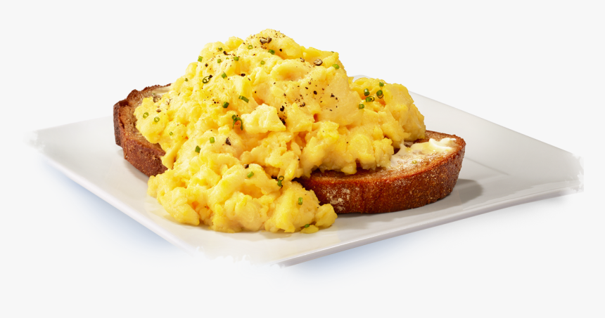

Scrambled Eggs
Description
Scrambled eggs are a great start to the day, or even a quick lunch or dinner. Make sure to use free-range eggs as they are tastier, and kinder to the chickens. Serves 4 people.
Ingredients
- 8 x 60
g free-range eggs - 80
ml (1/3 cup) milk - 1/4 tsp. salt
- 3 tsp. (15
g ) salted butter - 4 slices of buttered toast
Steps
- Crack the eggs into a medium mixing bowl. If you want you can keep eggshell and any possible blood out of the mixture by first cracking the eggs into a smaller bowl.
- Add milk and salt. The ratio of milk to egg is important as it will dictate the amount of moisture in the final cooked meal.
- Use a fork to lightly mix the ingredients, and stop when they have combined into a consistent yellow with no visible white streaks.
- Heat the butter in a frying pan over medium heat on the largest gas-burner or hotplate, coating the base of the pan. Do not set the oven too hot or the eggs may stick or become dry.
- Add the egg mixture to the pan and cook over medium heat for 30 seconds. Use a spatula to gently push the egg along the base of the pan from all four directions.
- Repeat pushing the mixture every ten seconds, making sure it does not stick to the pan edges. Lift and fold the eggs rather than stiirring them, as stirring will break them into small pieces.
- Cook for two minutes or until about three quarters of the eggs are cooked. Then remove them from the heat and let the residual heat in the pan finish cooking them.
- Serve the eggs on buttered toast immediately.